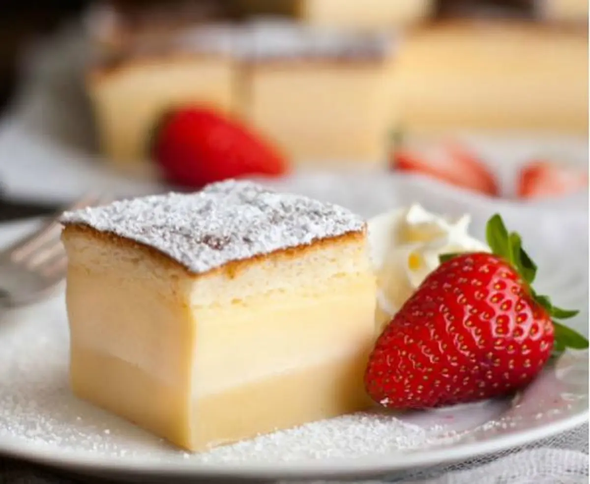

Pastel magico
Ingredientes
Para el bizcocho genovés de chocolate:
| Cantidad |
Productos |
| 120 gr. |
harina de trigo |
| 500 ml. |
leche entera |
| 120 gr. |
mantequilla |
| 4 |
huevos |
| ½ cdita. |
sal |
| 140 gr. |
azucar |
| 1 cda. |
esencia de vainilla |
| 1 cda. |
jugo de limon |
A tener en cuenta
- Molde desmoldable de 20 x 23 cm.
- para decorar azucar glass
- Tiempo de coccion 90 min.
- Rinde 8 porciones

Preparación de pastel mágico o inteligente
Empezamos separando las claras de las yemas de los huevos. En un recipiente amplio ponemos las claras y
la pizca de sal. Batimos las claras hasta montar a punto de nieve. Para que queden más estables empezamos
a batir a velocidad lenta y cuando estén espumosas aumentamos gradualmente la velocidad.
El montado de las claras es mucho más fácil si se hace con unas varillas eléctricas. Pero se puede hacer
igualmente a mano. Una vez montadas las claras las reservamos, tapadas con un trapo de cocina, a temperatura
ambiente.
En otro recipiente amplio y hondo ponemos las yemas de los huevos con el azúcar y batimos nuevamente con unas
varillas hasta blanquear. A continuación añadimos la esencia de vainilla y batimos de nuevo.
Agregamos la mantequilla y continuamos batiendo hasta integrar. Por último incorporamos la leche y la harina
tamizada. Lo hacemos intercalando ambos ingredientes y en pequeñas cantidades.
Empezamos con un poco de leche, batimos y, cuando esté integrada, añadimos un poco de harina. Batimos a la
velocidad más baja que permitan nuestras varillas (en caso de ser eléctrica). Repetimos la operación cuantas
veces sea necesario hasta que terminemos de añadir ambos ingredientes.
Agregamos las claras montadas a punto de nieve en dos partes, para que sea más fácil mezclar, pero sin llegar
a integrar las claras del todo. De ello depende el grosor de las capas de este pastel. Tenemos que obtener una
masa grumosa.
Horneado y presentación final del pastel
Forramos un molde de 23 x 20 cm aproximadamente con papel de hornear. Vertemos la mezcla en su interior y
alisamos un poco la superficie.
Introducimos el molde en el horno, precalentado a 180º C con calor arriba y abajo, y cocemos durante 10
minutos. Transcurrido este tiempo inicial bajamos la temperatura a 160º C y programamos 40 minutos de cocción
más.
Antes de sacar el pastel del horno comprobamos el punto insertando un palillo. Si este sale limpio, el pastel
está listo y lo podemos retirar del horno. Sí no es el caso tendremos que cocerlo unos 5-10 minutos más.
Dejamos reposar el pastel a temperatura ambiente durante una hora o hasta que haya enfriado antes de desmoldar. Es muy frágil, así que puede incluso venir bien dejarlo en la nevera hasta el día siguiente y desmoldar en el momento de consumir. Espolvoreamos toda la superficie con azúcar glasé y ¡a disfrutar!